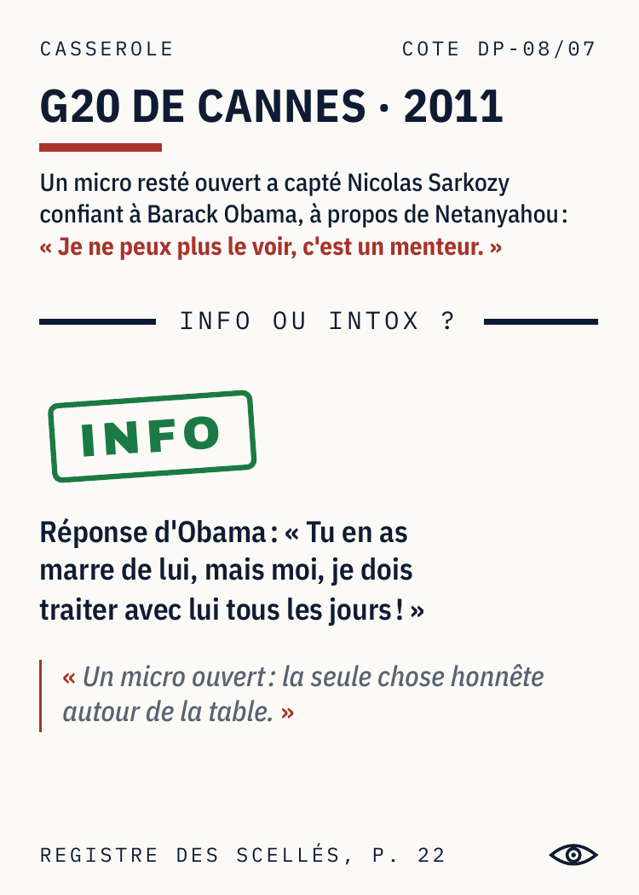
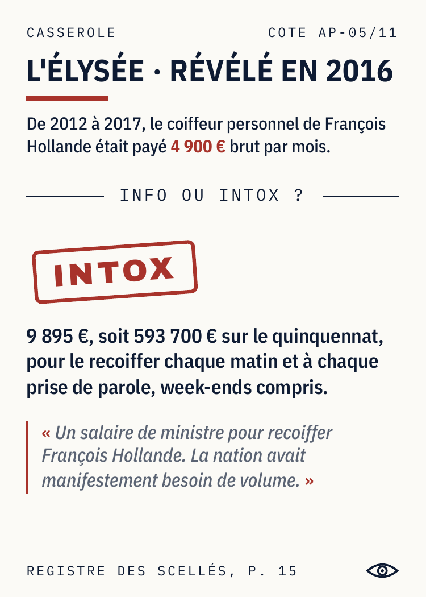
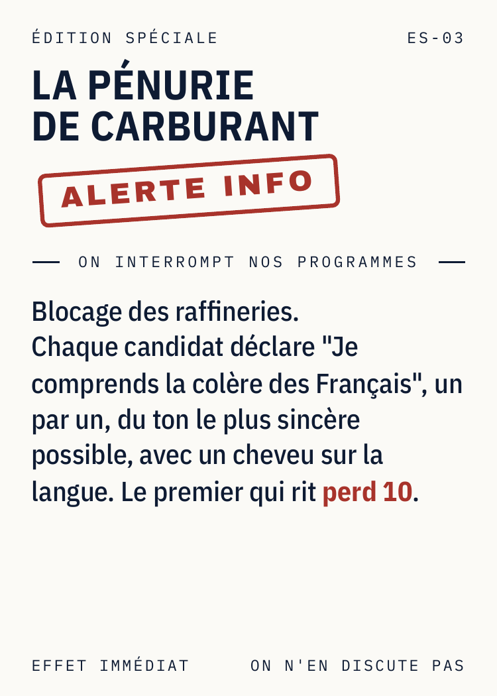

Les cartes
Quelques pièces du dossier

Casserole · Info

Casserole · Intox

Casserole · Intox

Casserole · Info

Magouille · Attaque

Édition spéciale
Lisez la Casserole. Info ou Intox ? Les yeux dans les yeux.
Fait
Le Porte-parole vient de lire. La table a trois secondes. Trois, deux, un, les yeux dans les yeux.
LES YEUX DANS LES YEUX. Un party game où toutes les dingueries de la politique française sont vraies, jugées ou déclarées publiquement, et sourcées carte par carte.
À chaque tour, le Porte-parole lit une Casserole. La table vote Info ou Intox, les yeux dans les yeux. Les Magouilles (49.3, Kompromat, Grâce présidentielle) font le reste. Le premier à 50 % passe son grand oral et se fait élire.
L'INA rencontre Blanc Manger Coco : le premier jeu d'archives, pas un énième jeu de satire.



État Prototype V2.1 complet et joué (premier playtest septembre 2026). Règle complète, registre des sources et jeu de cartes disponibles sur demande, en PDF ou en boîte.
Titre « Les yeux dans les yeux » est un titre de travail. Dépôt e-Soleau INPI du 3 septembre 2026.
Cannes 2027 Le prototype sera aux Nuits du Off du Festival International des Jeux, du 23 au 27 février 2027.